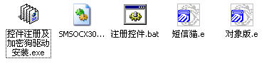
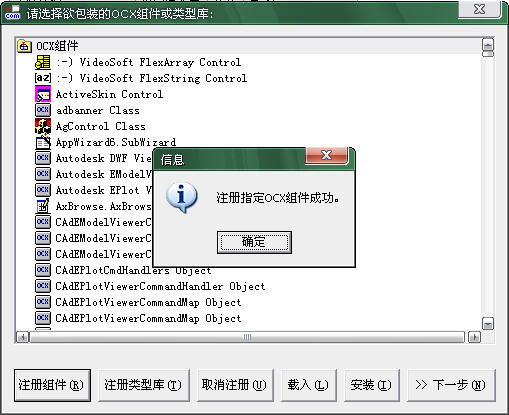

* 该例程针对威尔西短信猫为例进行详解
短信猫，一般也叫做GSM MODEM，从英文名翻译过来，其实就是支持GSM制式通讯的调制解调器，所以，短信猫还有很多别称，如GSM猫，无线猫，短信模块，GSM短信模块等。因为大部分客户都是拿着GSM MODEM去收发短信，也就是在行业应用市场上，GSM MODEM最大的用途是用来收发短信，因此，大多数人还是称之为短信猫。
短信猫是什么？ 短信猫其实是一种支持GSM无线通讯的工业级调制解调器，一般基于法国WAVECOM或德国SIEMENS（西门子）GSM模块，插入国内移动通信运营商的SIM卡后即可接入运营商GSM网络，实现无线GSM通话、短信、数据等功能。
电话
紧急呼叫
全速率，增强全速率及半速率（ FR/EFR/HR ）
双音多频功能（ DTMF ）
异步、透明与非透明数据电路，最高速率14,400比特/秒
自动传真组3（Class 1和Class 2）
MNP2，V.42bis
文本和PDU
点对点（MT/MO）
蜂窝广播
呼叫转移
呼叫禁止
多用户
呼叫等待与呼叫保持
呼叫线路标识
通话计费
USSD
闭合用户组
显示呼叫转移
ME＋SIM电话簿管理
特定号码拨出
SIM TOOLKIT CLASS 2
SIM、网络和服务提供商锁
实时时钟
闹钟管理
利用Xmodem协议升级软件
UCS2字符集管理
按照与计算机的不同接口，短信猫可分为串口短信猫、USB接口短信猫、PCI接口短信猫、网口短信猫等。
按照模块数的多少，短信猫可分为单口短信猫和短信猫池两种。短信猫池其实就是将多个模块集成到一起通过多串口或者网口与计算机形成多串口通讯，从而实现多个模块并发的设备。
按照无线网络制式的不同，又可分为GSM短信猫、CDMA短信猫和小灵通短信猫。
基于短信猫开发行业短信应用，软件开发商可以采取以下三种方式：
直接使用AT指令：基于串口通讯模式使用AT指令直接操作短信猫，这是最底层的短信猫开发模式，基本上无论是哪种接口的短信猫，其实质还是通过GSM MODEM的串口通讯AT指令来驱动的。
短信猫开发包：短信猫厂商针对软件开发商短信应用提供的二次开发包，其底层是基于短信猫的AT指令，对于软件开发商只需要调用二次开发包或者控件中的API即可。别小看了这短信猫开发包，如果编写不好，将直接影响到上层应用的稳定性。
短信猫通信中间件：这是万象短信网独家提供的基于数据库接口的短信猫通信服务器软件，软件开发商只需要提交短信队列到数据库里即可，开发简单快速，节约人力成本，是最佳的短信应用开发接口模式。
一.加密狗驱动的安装和控件的注册方法
首先要安装短信猫加密狗驱动，方法是运行开发包目录下的“控件注册及加密狗驱动安装.exe”。

在弹出窗口点击“安装加密狗驱动及注册控件”完成。
二.易语言注册组件的方法
接下来讲一下怎么样在易语言里注册控件，首先打开易语言，点工具-->类型库或OCX-->支持库，具体步骤如下图所示 ：
当出现如下界面后，点击“注册组件”按钮。
选中你要注册的OCX，点击“打开”按钮，如图所示:
提示注册成功，确定。

接下来就是把注册过的组件复制到易语言的lib文件夹里面，按“下一步”按钮。
点击新窗口的“保存”按钮。
在这里将产生一个"SMSOCX308.npk"文件，选择路径点击按钮“保存”。
在询问窗口点击按钮“是”钮 ，如果点击“否”钮，就需要手动把这个文件复制到易语言lib文件夹里以便易语言使用。
接着点击“是”钮，这里需要提醒大家必须注意的是，必须关闭正在运行的易语言程序，否则可能安装失败，在关闭易语言程序的时候请注意保存。
复制包装支持库成功！点击“确定”按钮，OCX安装成功。
安装玩组件以后，易语言不会自动载入新的组件的，就要你在“工具-->支持库配置”里面选择你要载入的组件。
下图中所选中的就是刚才安装的OCX组件，你选中后点击“确认”按钮就可以在组件箱中看到该组件了。
组件箱看到的“Smsgate”就是刚才安装的组件。
下面界面中看到的是新安装组件在程序中的应用。
三、制作
1、制作思路：
可以收发短信、接电话、打电话。
2、程序界面设计：
3、连接端口（默认为1，须按你电脑的实际设置）和端口连接速率（默认9600,n,8,1，要与手机相一致。在不能连接时，才考虑尝试不同的连接参数 ！）连接成功后，提示“连接成功”。代码如下图所示：连接后可以测试当前连接是否正常,为TURE则连接正常。这个方法是用于在运行中，定期检查连接是否还在正常状态中，在连接不稳定时（如红外连接时）可定时检查设备连接状态。
4.服务中心号码可以自动寻找到，那个好吗是手机号码运营商提供的。
5.发送短信，如果发送成功，则返回“y”，否则返回发送失败的原因，如设备正忙时返回“B”，每次发送70字。
6.有新短信息：当有新短信或发送报告时触发“_Smsgate1_OnRecvMsg”事件，提示处理。
6.接收短信，设置程序为自动接收后读出短信。读短信息,调用方法：Smsgate1. ReadMsg (whyre)， whyre =0 读手机未读信息，whyre =1 读手机已读信息， whyre =2 读手机所有信息。
7.打电话：打电话,调用方法 Smsgate1.CallPhone(PhoneNO,WaitTime)，PhoneNO 目标电话号码，WaitTime 等待回应时间。
8.接电话,接听当前呼叫,调用方法Smsgate1. AnswerCall，返回“True”或“False”（组件本身的返回值） 。
9.挂电话，挂断当前呼叫,调用方法 Smsgate1. HangUpCall，返回“True”或“False”（组件本身的返回值）。
10.有电话打进，事件“_Smsgate1_OnCall”，参数：“PhoneNo”来电的号码，当前SIM卡被叫时，产生本事件，可在本事件中读PhoneNo的值获得来电号码。
11、以上为短信猫的基本功能，此外，短信猫还有一些其它的功能（部分手机不支持），但只是介绍，没有在程序中写出，其它功能有这4个。
(1)、读手机中电话簿或通讯记录资料，调用方法：Smsgate1. ReadNB(pb_why)，参数说明：pb_why="me"
读手机中电话簿，pb_why="sm"
读SIM卡中电话簿，pb_why="rc"
读通话记录中已接电话记录，pb_why="mc"
读通话记录中未接电话记录。说明：成功返回手机相关资料，否则返回空字符；返回资料格式及分割方式同接收信息ReadMsg。
(2)、读手机型号，调用方法：Smsgate1. M_model 说明：成功返回手机型号，否则返回空字符。
(3)、读手机IMEI码,调用方法：smsgate1.
M_imei 说明：成功返回手机IMEI码，否则返回空字符。
(4)、取得手机生产厂商，调用方法：smsgate1. M_ltd1 说明：成功返回手机手机生产厂商名称，否则返回空字符。
| 版权所有 大连大有吴涛易语言软件开发有限公司 电话:86-0411-88995831 传真:86-0411-88995834 |